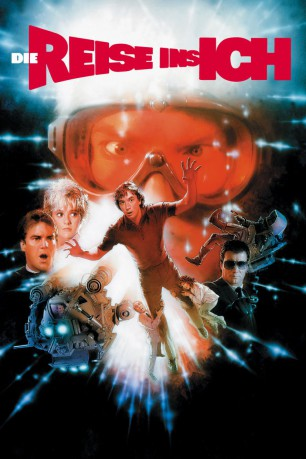

Auszeichnungen: 1 Oscars gewonnen
 gesehen am 15.08.2015
gesehen am 15.08.2015Alternativ: Innerspace
Auszeichnungen: 1 Oscars gewonnen gesehen am 15.08.2015
 
 IMDB-Wertung: 6.8 / 10
IMDB-Wertung: 6.8 / 10  Metascore:
Metascore: 
Ein Abenteuer ganz besonderer Art Auf Mikrobengröße verkleinert soll der wackere Testpilot Tuck Pendelton das Körperinnere eines Versuchskaninchens erforschen. Leider landet er - per Injektion - im Allerwertesten des Angsthasen Jack Putter. Was folgt, ist ein wahnwitziger Wettlauf mit der Zeit. Von mordlustigen Industriespionen verfolgt, hat Jack nämlich das ungute Gefühl, dass der Mini-Mann in seiner Blutbahn bald wieder Normalgröße erreichen wird... Ein spannendes und zugleich verrücktes Sciencefiction-Abenteuer mit Dennis Quaid "An jedem verdammten Sonntag" und Meg Ryan "E-mail für Dich".
Jahr: 1987
Dauer: 120 Minuten
FSK: 12
Land: USA Studio: Warner Bros.Tonspuren: DD2.0 - ,
Untertitel:
Auflösung: 1080p (1920x1080) Größe: 10178 MB
Genre: Action, Thriller, Sci-Fi, Komödie, Abenteuer, Fantasy
Regisseur: Joe Dante
Drehbuch: Chip Proser, Jeffrey Boam, Chip Proser
Soundtrack: Jerry Goldsmith
Darsteller:
 Dennis Quaid als Lt. Tuck Pendleton
Dennis Quaid als Lt. Tuck Pendleton Martin Short als Jack Putter
Martin Short als Jack Putter Meg Ryan als Lydia Maxwell
Meg Ryan als Lydia Maxwell Kevin McCarthy als Victor Eugene Scrimshaw
Kevin McCarthy als Victor Eugene Scrimshaw Vernon Wells als Mr. Igoe
Vernon Wells als Mr. Igoe Robert Picardo als The Cowboy
Robert Picardo als The Cowboy Wendy Schaal als Wendy
Wendy Schaal als Wendy William Schallert als Dr. Greenbush
William Schallert als Dr. Greenbush Henry Gibson als Mr. Wormwood
Henry Gibson als Mr. Wormwood Mark L. Taylor als Dr. Niles
Mark L. Taylor als Dr. Niles Orson Bean als Lydia's Editor
Orson Bean als Lydia's Editor Kathleen Freeman als Dream Lady
Kathleen Freeman als Dream Lady Archie Hahn als Messenger
Archie Hahn als Messenger Dick Miller als Cab Driver
Dick Miller als Cab Driver Kenneth Tobey als Man in Restroom
Kenneth Tobey als Man in Restroom Joe Flaherty als Waiting Room Patient
Joe Flaherty als Waiting Room Patient Andrea Martin als Waiting Room Patient
Andrea Martin als Waiting Room Patient Grainger Hines als Rusty
Grainger Hines als Rusty Richard McGonagle als Cop
Richard McGonagle als Cop Terence McGovern als Travel Agent
Terence McGovern als Travel Agent Rance Howard als Supermarket Customer
Rance Howard als Supermarket Customer Alan Blumenfeld als Man with Camera
Alan Blumenfeld als Man with Camera Neil Ross als Pod Computer
Neil Ross als Pod Computer Frank Miller als Scrimshaw's Henchman
Frank Miller als Scrimshaw's Henchman Jenny Gago als Lab Technician
Jenny Gago als Lab TechnicianDatei: X:\1987\Reise ins Ich, Die (1987, FSK12, 1920x1080).mkv seit 10.08.2015
Festplatte: HD 1987-1991
 Es gibt insgesamt 50 Filme in der Gruppe '1987'
Es gibt insgesamt 50 Filme in der Gruppe '1987'